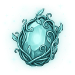
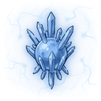
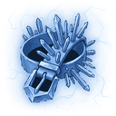
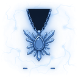

Gölge Hisarı D8
ZindanT8Sv 75-80
Giriş anahtarı:  Adamantit Anahtarı T8
Adamantit Anahtarı T8
Yaratıklar
| Yaratık | Seviye | Düşenler |
|---|---|---|
| Karanlık Titan | Sv 75 |  Yükseltme Taşı T7 Adamantit Yüzük T8 Adamantit Yüzük T8 |
| Ruh Yağmacısı | Sv 77 | Yükseltme Taşı T7  Adamantit Zindan Çekirdeği |
| Zindan Muhafızı T8 | Sv 80 | Yükseltme Taşı T7  Adamantit Küpe T8 Adamantit Küpe T8 |
| Zindan Lordu T8 Boss | Sv 80 |  Normal Öz Yükseltme Taşı T7 Normal Öz Yükseltme Taşı T7  Adamantit Kemer T8 Adamantit Zindan Çekirdeği Adamantit Kolye T8 |